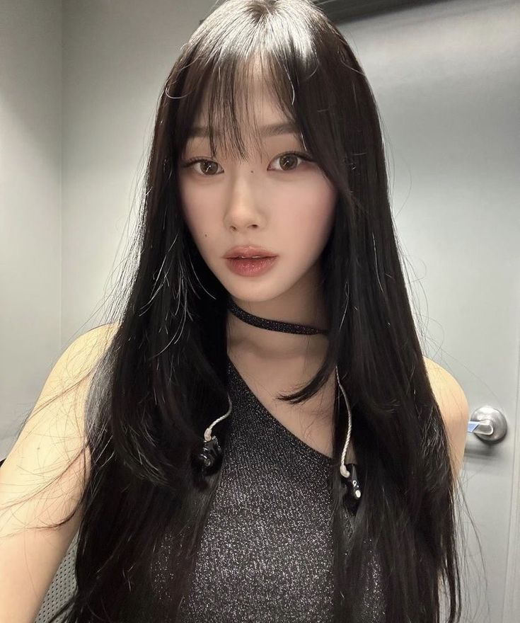
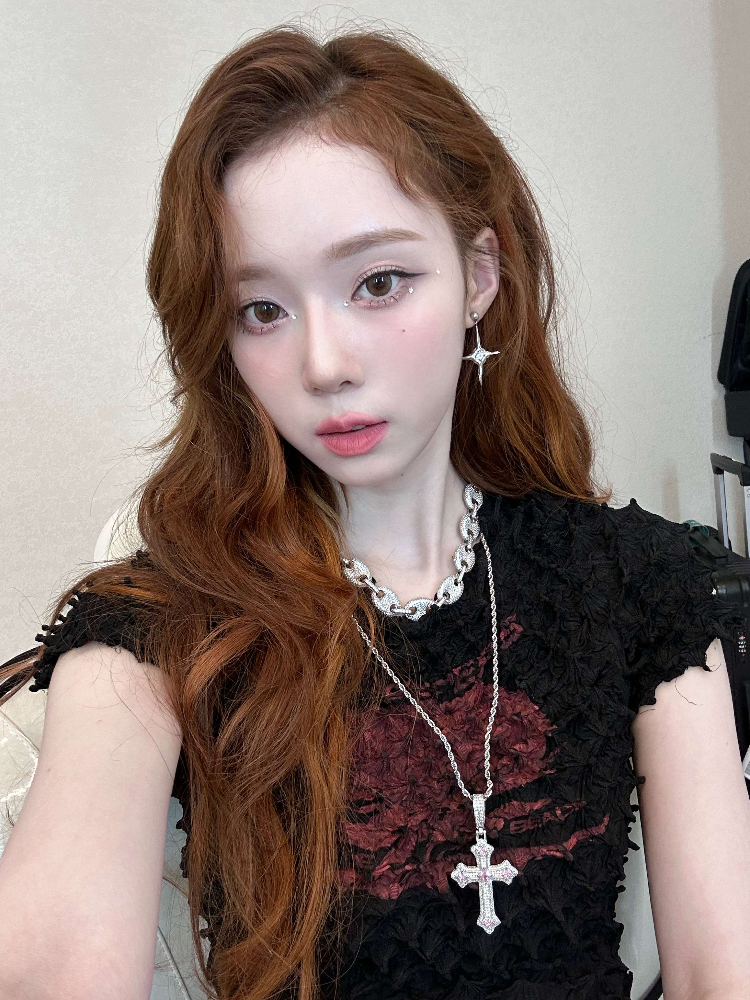

Karina
Karina: A Líder Carismática do aespa Karina, cujo nome completo é Yoo Ji-min, é a líder do popular grupo feminino sul-coreano aespa, formado pela SM Entertainment. Desde sua estreia, ela se destacou por seu carisma inegável, visuais impressionantes e habilidades de dança impecáveis. Nascida em 11 de Abril do ano 2000, Karina rapidamente conquistou o coração dos fãs com seu talento multifacetado. Além de ser uma excelente dançarina, ela possui uma voz suave e melódica que complementa perfeitamente o conceito do aespa. Sua presença de palco poderosa e sua capacidade de interagir com o público a tornam uma verdadeira estrela. Como líder do grupo, Karina demonstra maturidade e responsabilidade, guiando suas colegas de equipe com gentileza e firmeza. Sua dedicação e trabalho árduo são admirados por fãs e colegas de indústria. Além de suas atividades com o aespa, Karina também faz parte do supergrupo Got the Beat, o que demonstra sua versatilidade e popularidade. Com sua beleza única e estilo fashion impecável, Karina se tornou um ícone da moda e beleza na Coreia do Sul. Suas escolhas de roupas e acessórios são frequentemente comentadas e imitadas por fãs. Além disso, sua influência se estende além da música, com a jovem artista sendo embaixadora de diversas marcas. Pontos-chave sobre Karina: Nome completo: Yoo Ji-min Grupo: aespa (líder) e Got the Beat Talentos: Dança, canto, visual Personalidade: Carismática, responsável, dedicada Influência: Ícone da moda e beleza
 Solo: UP
Solo: Menagerie
Solo: UP
Solo: Menagerie
Ningning
NingNing: O Vocal Poderosa do aespa NingNing, cujo nome completo é Ning Yizhuo, é uma das integrantes do grupo feminino sul-coreano aespa. Conhecida por sua voz poderosa e técnica vocal impecável, ela rapidamente se tornou uma das vocalistas mais admiradas da nova geração do K-pop. Nascida na China, NingNing demonstrou um talento excepcional para a música desde muito jovem. Antes de sua estreia com o aespa, ela já havia participado de diversos programas de talentos em seu país natal, impressionando a todos com sua voz única e versátil. Com uma presença de palco marcante e uma beleza delicada, NingNing conquistou o coração dos fãs em todo o mundo. Sua capacidade de interpretar as músicas com emoção e autenticidade a diferencia das demais. Além de suas habilidades vocais, ela também é uma dançarina talentosa e uma compositora em ascensão. Como membro do aespa, NingNing contribui significativamente para o sucesso do grupo. Sua voz poderosa adiciona uma dimensão extra às músicas do grupo, e suas performances ao vivo são sempre aguardadas com grande expectativa pelos fãs. Pontos-chave sobre NingNing: Nome completo: Ning Yizhuo Grupo: aespa Talentos: Canto, dança, composição Personalidade: Delicada, talentosa, carismática Influência: Uma das principais vocalistas da nova geração do K-pop
Solo: Bored!Giselle
Giselle: A Rapper Fluente e Multitalentosa do aespa Giselle, cujo nome completo é Aeri Uchinaga, é a rapper principal do grupo feminino sul-coreano aespa. Nascida no Japão e criada na Coreia do Sul, Giselle traz uma energia única e um flow impecável para o grupo. Com fluência em coreano, japonês e inglês, Giselle é responsável por grande parte das partes rap das músicas do aespa. Sua habilidade de alternar entre diferentes idiomas e estilos musicais a torna uma artista versátil e cativante. Além de ser uma rapper talentosa, Giselle também possui uma voz suave e melódica, que a permite participar dos vocais do grupo. A fluência de Giselle em múltiplos idiomas a torna uma ponte entre a Coreia do Sul e o Japão, o que contribui para a popularidade internacional do aespa. Sua personalidade divertida e extrovertida a torna uma das integrantes mais queridas pelos fãs. Pontos-chave sobre Giselle: Nome completo: Aeri Uchinaga Grupo: aespa Talentos: Rap, canto, dança, fluência em múltiplos idiomas Personalidade: Divertida, extrovertida, versátil Influência: Uma das principais rappers da nova geração do K-pop
 Solo: Dopamine Solo: 2HOT4UWinter
Winter: A Vocalista Principal e Dançarina Talentosa do aespa Winter, cujo nome completo é Kim Min-jeong, é a vocalista principal do grupo feminino sul-coreano aespa. Conhecida por sua voz doce e melodiosa, ela rapidamente conquistou o coração dos fãs com suas performances impecáveis. Desde sua estreia, Winter se destacou não apenas por seu vocal, mas também por suas habilidades de dança. Sua sincronia e expressividade em cada performance impressionam tanto fãs quanto críticos. Além disso, sua beleza delicada e visual angelical a tornaram um ícone da moda e beleza na Coreia do Sul. Nascida em [data de nascimento], Winter demonstrou um talento natural para a música e a dança desde muito jovem. Antes de sua estreia com o aespa, ela treinou por vários anos na SM Entertainment, aprimorando suas habilidades e se preparando para o sucesso. Pontos-chave sobre Winter: Nome completo: Kim Min-jeong Grupo: aespa Talentos: Canto, dança, visual Personalidade: Doce, talentosa, dedicada e timida Influência: Ícone da moda e beleza
 Solo: Spark Solo: Lips